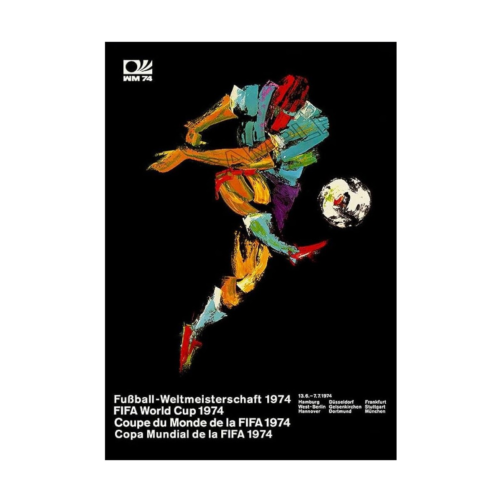

Official Poster
The official 1974 FIFA World Cup poster, designed by German artist Horst Schäfer, features a stylized, impressionistic depiction of a football player in motion. The poster utilizes bold, "aggressive" paint streaks and broad brush dabs against a stark black background to convey a sense of dynamism, speed, and energy. It depicts a footballer striking the ball, which returned the World Cup's visual branding to a more traditional athlete-focused theme compared to the minimalist graphic of 1970. The names of the nine host cities—such as Munich, Hamburg, and West Berlin—often appear prominently in the design, reflecting a push toward regional identity.

Horst Schäfer
Horst Schäfer (1931–2015) was a German painter and commercial graphic designer. He is most widely recognized for creating the official mascots, Tip and Tap, for the 1974 FIFA World Cup hosted in West Germany.
He designed Tip and Tap, two cheerful boys in football kits representing the host nation. The mascots were used extensively in promotion, toys, and figurines.
Beyond sports, he worked as a Werbegrafiker (advertising designer) and painter throughout his career.
His professional activity and later life are often associated with the Saarland region of Germany